Hazirlayan: ZERDEST SURGICI
Final Calisma Takibim
Final Sinav Takvimi
| Ders | Tarih | Saat | Derslik |
|---|---|---|---|
| Programlama Temelleri | 12.01.2026 | 10:00 | D5-D6 |
| Web Tasariminin Temelleri | 13.01.2026 | 10:00 | D5-D6 |
| Ag Temelleri | 14.01.2026 | 10:00 | D5-D6 |
| Bilgi ve Iletisim Teknolojisi | 15.01.2026 | 10:00 | D5-D6 |
| Ofis Yazilimlari | 19.01.2026 | 10:00 | D5-D6 |
| Matematik | 20.01.2026 | 10:00 | D5-D6 |
| Yazilim Kurulumu ve Yonetimi | 21.01.2026 | 10:00 | D5-D6 |
Programlama Temelleri
Bilgisayarin tarihcesi
Bilgisayarin gelisimi cok eskiye dayanir.
Abakus : Ilk hesaplama aracidir.
1642-Pasccaline : Blaise Pascal tarafindan gelistirilen mekanik hesap makinesi.
1830-Analitik Makine : Charles Babbage tarafindan tasarlanmistir.
1946-Eniac : Ilk elektronik ve genel amacli bilgisayardir.
1950'ler : Vakum tuplu bilgisayarlar.
1960'lar transistorlu bilgisayarlar.
1970'ler Entegre devreler.
Gunumuz: Mikrosilemciler, kisisel bilgisayarlar, yapay zeka.
Yazilim ve donanim nedir ornek veriniz
Donanim
Bilgisayarin fiziksel parcalaridir
Ornekler:
Klavye
Mouse
Monitor
Islemci
Ram
Hard disk
Yazilim (Software)
Bilgisayara ne yapacagini soyleyen programlardir
Ornekler :
Windows
Word
Chrome
Oyunlar
Mobil uygulamalar
Ikilik sayi sistemi ve onluk sayi sistemi
Onluk Sayi Sistemi
Gunluk hayatta kullanilir.
0-9 arasindaki rakamlari kullanir.
Ornek: 27, 145
Ikilik Sayi Sistemi
Bilgisayarlar tarafindan kullanilir
Sadee 0 ve 1 rakamalari vardir.
Ornek: 1010 = 10
Ilk bilgisayar programcisi kimdir
Ilk bilgisayar programcisi Ada Lovelace
Ilk algoritmayi yazmistir.
Dunyanin ilk bilgisayar programcisi olarak kabul edilir.
Yuksek seviyeli diller ve dusuk seviyeli diller nedir bir iki ornek
Dusuk seviyeli diller
Makine diline yakindir
Donanimla dogrudan calisir
Ogrenmesi zordur.
Ornekler
Makine dili
Assembly
Yuksek seviyeli diller
insan diline yakindir.
Ogrenmesi kolaydir.
Ornekler
C
C#
Java
Python
Bilgisayar nasil calisir (giris islem cikis)
1.Giris Klavye, mouse, kamera
2.Islem Islemci (CPU) veriyi isler
3.Cikis Monitor, yazici , hoparlor
Ornek :
Klavye --> islemci --> monitor
Algoritmanin temel ozellikleri
Baslangici ve bitisi vardir.
Adim adim ilerler
Acik ve anlasilirdir
Sonlu adimlardan olusur
Her adim nettir
Bir algoritma ornegi ve akis diyagrami
Algoritma Ornegi (Iki sayinin toplami)
1.Basla
2.Birinci sayiyi gir
3. Ikinci sayiyi gir
4. Toplam = sayi1 + sayi2
5.Sonucu yazdir
6. Bitir
Akis Diyagrami Sekilleri
Oval : Basla / bitir
Paralelkenar: Giris / cikis
Dikdortgen: Islem
Oklar: Akis Yonu
Operatorler
Aritmetik Operatorler
/ %
Karsilastirma Operatorleri
== , != , < , > , <= , >=
Atama Operatorleri
= , += , -= , *= , /=
Mantiksal Operatorler
&& (AND)|| (OR)
! (NOT)
Editorler derleyiciler baglayicilar yorumlayicilar
Editor: Kod yazilan ortamdir
Ornek: Notepad, VS Code
Derleyici (Compiler): Kodu komple makine diline cevirir
Ornek: C, C++
Yorumlayici (Interpreter): Kodu satir satir calistirir
Ornek: Python
Baglayici (Linker): Program dosyalarini
Hatalar (syntax error run time error logic error)
Syntax Error: Yazim hatasi
Ornek: Noktali virgul unutmak
Run Time Error: Program calisirken olusan hata
Ornek: Sifira bolme
Logic Error: Program calisir ama yanlis sonuc verir
Ornek: Yanlis formul
Degisken kavrami
Degisken, program icinde veri saklamak icin kullanilan isimlendirilmis alanlardir.
Deger atama islemi
Bir degiskene deger verme islemidir
int x = 10;
Mantiksal islemler
AND (&&): Iki kosul dogruysa sonuc dogrudur
OR (||): Kosullardan biri dogruysa sonuc dogrudur
NOT (!): Degerin tersini alir
Degisken nedir
Program icinde degeri degiseilen veri tutan yapidir.
Veri tipleri (tanim veya ornek)
int: Tam sayi
int a = 5;
float: Ondalikli sayi
float b = 3.14;
double: Buyuk ondalikli sayi
double c = 2.56;
char: Tek karakter
char d = 'A';
string: Metin
"Merhaba"
bool: Dogru veya yanlis
true / false
Degisken tanimlama kurallari
Harf veya _ ile baslamalidir
Sayi ile baslayamaz
Bosluk iceremez
Turkce karakter kullanilmaz
Ozel karakter iceremez
Anahtar kelime olamaz (int, class vb.)
Dogru:
sayi1
_toplam
Yanlis:
1sayi
top-lam
Web Tasariminin Temelleri
HTML ve CSS te . ve # Nedir?
Web tasariminda HTML ve CSS kullanirken bazi ifadelerin basinda . veya # isaretlerini goruruz. Bu isaretler sayfadaki hangi elemana ozellik verilecegini belirtir.
1) Nokta ( . ) Ne Ise Yarar?
Nokta isareti CLASS secicisini ifade eder. HTML de bir elemana class verirsek, bu class CSS te nokta ile cagirilir.
Ornek:
<p class="kirmizi">Bu yazi kirmizi olacak</p>
Bu ornek bir elemana class verildigini gosterir.
2) Diyez ( # ) Ne Ise Yarar?
Diyez isareti ID secicisini ifade eder. HTML de bir elemana id verirsek, bu id CSS te diyez ile cagirilir.
Ornek:
<div id="menu">Burasi menu</div>
Bu ornek bir elemana id verildigini gosterir.
3) Class ve ID Arasindaki Fark
Class birden fazla yerde kullanilabilir. ID ise sadece bir kere kullanilmalidir.
Ozet:
- . class secer ve birden fazla yerde kullanilir
- # id secer ve sadece bir yerde kullanilir
- Ikisi de HTML elemanlarini hedef almak icin vardir
Bu sistem sayesinde HTML elemanlarini kolayca kontrol edebiliriz.
HTML ve CSS de Yorum Satiri Nedir?
Yorum satirlari, koda aciklama yazmak icin kullanilir. Tarayici bu satirlari okumaz, calistirmaz ve gostermez. Sadece kodu yazan kisi icin not amaciyla vardir.
Yani yorum satiri = Kod icin not defteri
1) HTML de Yorum Satiri Nasil Yazilir?
HTML de yorum satiri su sekilde yazilir:
<!-- Bu bir yorum satiridir -->
Ornek kullanim:
<!-- Burasi baslik bolumu --> <h1>Hosgeldiniz</h1> <!-- Burasi paragraf bolumu --> <p>Bu bir ornek yazidir</p>
Bu yorumlar sayfada gorunmez.
Kod kapatma ornegi:
<!-- <p>Bu yazi gecici olarak kapatildi</p> -->
Bu kod calismaz ve sayfada gorunmez.
2) CSS de Yorum Satiri Nasil Yazilir?
CSS de yorum satiri farkli yazilir:
/* Bu bir yorum satiridir */
CSS ornek:
/* Bu baslik stilleridir */
h1 {
color: red;
}
/* Bu menu icin yazilmistir */
.menu {
background: blue;
}
Not: Bu ornekler sadece gostermek icindir, bu sayfada CSS kullanilmamaktadir.
3) Yorum Satirlari Ne Ise Yarar?
- Kodun ne yaptigini aciklar
- Kodu okuyan kisi icin rehber olur
- Gecici olarak kodu devre disi birakir
- Buyuk projelerde duzen saglar
- Hata ayiklarken deneme yapmak icin kullanilir
4) HTML ve CSS Yorum Satiri Arasindaki Fark
HTML yorum seklinde: <!-- yorum -->
CSS yorum seklinde: /* yorum */
5) Kisa Ozet
- Yorum satirlari calismaz
- Sadece aciklama amaclidir
- HTML de <!-- --> kullanilir
- CSS de /* */ kullanilir
- Kodun daha anlasilir olmasi icin vardir
Ag Temelleri - Soru Bazli Konu Basliklari
DHCP Nedir ve Ne Ise Yarar?
DHCP, internete veya bir aga baglanan cihazlara otomatik olarak IP adresi veren sistemdir.
IP adresi, cihazlarin ag icinde kim oldugunu gosteren numara gibidir.
Gunluk Hayattan Ornek:
Bir sinifa giren ogrencilere ogretmenin sira numarasi vermesi gibi dusun.
- Herkese farkli numara verilir
- Kim kimdir karismaz
- Otomatik dagitilir
DHCP Ne Yapar?
- Telefona, bilgisayara, tablete otomatik IP verir
- Sen hicbir sey ayarlamazsin
- Internet hemen calisir
Eger DHCP Olmasaydi?
- Her cihaza tek tek elle IP yazman gerekirdi
- Karismalar ve hatalar olurdu
- Internet zor calisirdi
Kisa Ozet:
DHCP = Aga baglanan cihazlara otomatik numara (IP) dagitan sistem
MAC Adresi
- MAC adresinin tanimi
- Fiziksel (donanimsal) adres kavrami
- MAC adresinin benzersizligi
- MAC adresinin bit uzunlugu (48 bit)
Ethernet Kablo Standartlari
- T568A ve T568B standartlari
- T568B renk dizilimi
- UTP kablo yapisi ve iletken ciftleri
Ag Cihazlari
- Router (yonlendirici): aglar arasi iletisim
- Repeater: zayiflayan sinyali guclendirme
- Switch Bridge NIC temel gorevleri
- Ag cihazlarinin OSI katmanlariyla iliskisi
Ag Topolojileri
- Yildiz (Star) topolojisi - avantaj ve dezavantaj
- Halka (Ring) topolojisi
- Veri Yolu (Bus) topolojisi
- Ag topolojisi olmayan yapilar
OSI Referans Modeli
- Fiziksel
- Veri Bagi
- Ag
- Ulasim
- Oturum
- Sunum
- Uygulama
- Katmanlarin gorevleri
- Katman siralamasinin ezberlenmesi
IP Adresleme
- A B C sinifi IP adresleri
- B sinifi IP adres araligi
- Ilk oktete gore sinif belirleme
- LAN MAN WAN WLAN
- Kapsama alani karsilastirmasi
IPv4 IPv6 DHCP
- IPv4 adres yapisi
- IPv6 adres yapisi
- IPv4 IPv6 farklari
- DHCP gorevi
- Otomatik IP dagitimi
- DHCP onemi
Subnet ve Hesaplamalar
- /24 subnet mask nedir
- Kullanilabilir host sayisi
- Network ve broadcast adresi
- Binary subnet mask to decimal
- Bit oktet donusumleri
- /18 subnet senaryosu
- Network adresi bulma
- Broadcast adresi bulma
- Ilk ve son kullanilabilir IP
- Host araligi belirleme
Bilgi ve Iletisim Teknolojisi - Genel Tekrar Sorulari
Microsoft Word 2016
Giris ve Dosya Islemleri
-
WordPad ile Word arasindaki farklar
-
Baslat Menusu ve Calistir (winword) ile acma
-
Arayuz: Sekmeler, Arac Cubugu, Cetvel, Kaydirma Cubugu
-
Cetvelin acilip kapanmasi (Gorunum sekmesi)
-
Belgeyi Yakınlastirma/Uzaklastirma (Ctrl+Tekerlek)
-
Belge Kaydetme (Dosya > Kaydet / Farkli Kaydet)
-
Kayit Turleri: .docx (yeni), .doc (eski), .pdf
-
Belgeye Parola Koyma (Genel Secenekler)
-
Belge Yazdirma ayarlari ve Onizleme (Ctrl+P)
-
Serit (Ribbon) gizleme ve gosterme ayarlari
Metin Duzenleme ve Bicimlendirme
-
Metin Secme: Surukle, Cift tik (kelime), Uc tik (paragraf)
-
Satir secme (Sol kenar boslugu tiklama)
-
Klavye ile secim (Shift+Yon tuslari, Ctrl+A)
-
Geri Al (Ctrl+Z) ve Yinele islemleri
-
Yazi Tipi: Kalin, Italik, Alti Cizili, Ustu Cizili
-
Alt Simge ve Ust Simge kullanimi (x2, H2O)
-
Buyuk/Kucuk Harf degistirme (Shift+F3)
-
Metin Efektleri ve Golgelendirme
-
Bicim Boyacisi ile stil kopyalama
-
Paragraf Hizalama (Sola, Ortala, Saga, Iki Yana Yasla)
Paragraf ve Sayfa Düzeni
-
Satir ve Paragraf Araliklari ayarlama
-
Girintileri Artir/Azalt dugmeleri
-
Madde Isaretleri ve Numaralandirma listeleri
-
Kenarliklar ve Golgelendirme (Kutu, Ozel)
-
Bul (Ctrl+F) ve Degistir (Ctrl+H) islemleri
-
Sayfa Yapisi: Kenar Bosluklari (Normal, Dar)
-
Sayfa Yonlendirme (Dikey/Yatay)
-
Kagit Boyutu (A4, A5 vb.) ayarlama
-
Sayfa Rengi ve Filigran ekleme (Tasarim sekmesi)
-
Sayfa Kenarliklari (Cerceve) ekleme
Ekle Menusu ve Nesneler
-
Kapak sayfasi ekleme ve duzenleme
-
Bos Sayfa ve Sayfa Sonu (Ctrl+Enter) ekleme
-
Tablo Ekleme: Satir/Sutun sayisi belirleme
-
Tablo Araclari: Hucre birlestirme, bolme
-
Tablo kenarliklari ve golgelendirme
-
Resim Ekleme ve "Metni Kaydir" ayarlari
-
Sekiller, SmartArt ve Metin Kutusu ekleme
-
Grafik Ekleme ve Excel baglantisi
-
Ust Bilgi, Alt Bilgi ve Sayfa Numarasi
-
Denklem ve Simge ekleme
Basvurular ve Diger Ozellikler
-
Icindekiler Tablosu olusturma (Otomatik)
-
Dipnot ve Sonnot ekleme (Ctrl+Alt+F)
-
Resim Yazisi (Sekil 1, Tablo 1) ekleme
-
Alinti ve Kaynakca ekleme
-
Yazim ve Dilbilgisi Denetimi (F7)
-
Sozcuk Sayimi
-
Gorunum Modlari: Okuma Modu, Sayfa Duzeni
Microsoft Excel 2016
Temel Islemler ve Arayuz
-
Calisma Kitabi ve Calisma sayfasi kavrami
-
Satir (Sayi), Sutun (Harf) ve Hucre (A1) yapisi
-
Ad Kutusu ve Formul Cubugu kullanimi
-
Veri Girisi: Sayi, Metin ve Tarih formatlari
-
Hucre icerigini duzenleme (F2 veya Cift tik)
-
Satir/Sutun Ekleme ve Silme (Sag tik menu)
-
Satir Yuksekligi ve Sutun Genisligi ayarlama
-
Sayfa Sekmeleri: Renk degistirme, Isim verme
-
Sayfalari Gizleme/Gosterme ve Tasima
Hucre Bicimlendirme
-
Hucre Secimi: Tek, Ardisik (Surukle), Ayrik (Ctrl)
-
Tum satiri veya sutunu secme
-
Yazi Tipi ve Hizalama (Dikey/Yatay Ortala)
-
Birlestir ve Ortala islemi
-
Metni Kaydir ozelligi
-
Sayi Bicimleri: Para birimi, Yuzde, Tarih
-
Hucre Kenarliklari ve Dolgu Rengi
-
Bicim Boyacisi ile format kopyalama
Formuller ve Fonksiyonlar
-
Formul yazma kurali: Esittir (=) ile baslama
-
Matematiksel Operatorler (+, -, *, /, ^)
-
Islem Onceligi (Parantez, Us, Carpma, Toplama)
-
Hucre Basvurulari (A1+B1) mantigi
-
Sabit ve Degisken kullanimi ($ isareti)
-
Otomatik Toplam (Sigma) dugmesi
-
TOPLA (SUM) fonksiyonu ve aralik (A1:A10)
-
ORTALAMA (AVERAGE) fonksiyonu
-
MAK (MAX) ve MIN (MIN) fonksiyonlari
-
BUYUK ve KUCUK fonksiyonlari (kacinci deger)
Ileri Seviye Formuller
-
EGER (IF) Fonksiyonu: Kosul, Dogruysa, Yanlissa
-
Ic ice EGER kullanimi ve mantigi
-
EGER ile metin ("Gecti") ve sayi yazdırma
-
YUVARLA fonksiyonu ve basamak sayisi
-
BIRLESTIR fonksiyonu (& operatoru)
-
Metin Fonksiyonlari: BUYUKHARF, KUCUKHARF
-
Tarih Fonksiyonlari: BUGUN(), SIMDI(), GUN(), AY()
-
Formulleri surukleyerek cogaltma (Kulp)
-
Hata kodlari (#DEGER!, #AD?, #SAYI!) anlamlari
Veri Analizi ve Grafikler
-
Siralama: A'dan Z'ye, Kucukten Buyuge
-
Ozel Siralama (Birden fazla duzey)
-
Filtreleme: Metin ve Sayi filtreleri
-
Bul ve Sec ozellikleri
-
Seri Olusturma (Otomatik Doldurma)
-
Grafik Ekleme: Sutun, Cizgi, Pasta grafikler
-
Grafik Ogesi Ekle (Baslik, Veri Etiketi)
-
Kosullu Bicimlendirme (Temel kurallar)
-
Sayfa Sonu Onizleme ve Yazdirma Alani belirleme
Sayi Sistemleri
Giris
- Dijital (sayisal) elektronikte dort cesit sayi sistemi kullanilmaktadir. Bunlar:
- Onlu (Desimal) Sayi Sistemi
- Ikilik (Binary) Sayi Sistemi
- Sekizli (Oktal) Sayi Sistemi
- Onaltili (Hexadesimal) Sayi Sistemi'dir.
1. Onlu (Desimal) Sayi Sistemi
- Desimal sayi sistemi normal sayma sayilardan olusur. Gunluk hayatimizda kullandigimiz sayi sistemidir.
- On adet sayi bulundugu icin bu sayi sisteminin tabani 10'dur. (348)10 seklinde yazilir.
- Ayrica 10 tabanli sistem olarak da adlandirilir ve bu sistemde on tane sembol kullanilir.
- Taban: 10
- Semboller: 0,1,2,3,4,5,6,7,8,9
- Genel Bicim ve Terminoloji:
- En Buyuk Degerli Basamak (Most Significant Digit, MSD): Sayinin en solundaki rakamdir.
- En Kucuk Degerli Basamak (Least Significant Digit, LSD): Sayinin en sagindaki rakamdir.
- Ondalik Nokta (Decimal Point, DP): Tam kisim ile kesir kismini ayirir.
2. Ikili (Binary) Sayi Sistemi
- Binary sayi sisteminde iki adet sayi bulunur. Bunlar 0 ve 1 dir. Bu yuzden binary sayi sisteminin tabani 2'dir.
- (1011)2 seklinde yazilir. Bu sayi sistemine ikili sayi anlamina gelen binary numbers yani binary sayi sistemi denilmistir.
- Her sayi dijit olarak ifade edilir ve basamaklar 2'nin kuvveti olarak yazilir.
- Bu sistemde, Boole cebrinde dogru ve yanlisi belirtmek uzere iki tane sembol kullanilir.
- Taban: 2
- Semboller: 0,1
- Terminoloji:
- En Buyuk Degerli Bit (Most Significant Bit, MSB): En agirlikli bit.
- En Kucuk Degerli Bit (Least Significant Bit, LSB): En kucuk degerli bit.
- Ikili Nokta (Binary Point, BP).
3. Sekizli (Oktal) Sayi Sistemi
- Octal sayi sisteminde 8 adet rakam bulunmaktadir. Bunlar 0 1 2 3 4 5 6 7'dir. Taban sayisi 8'dir.
- (125)8 seklinde gosterilir.
- Sekizli sayi sistemi, sayisal elektronik sistemlerinde ses ve muzik uygulamalarinda yaygin olarak kullanilir.
- Muzikte kullanilan notalara (do re mi fa sol la si do) karsi gelmek uzere sekiz sembol kullanilir.
- Taban: 8
- Semboller: 0,1,2,3,4,5,6,7
4. Onaltilik (Hexadesimal) Sayi Sistemi
- Onaltilik (Hexadecimal, Hex) sayi sistemi, sayisal elektronik sistemlerinde mikroislemci temelli uygulamalarda yaygin olarak kullanilir.
- Bu sistemde, ondalik sayi sisteminde kullanilan sembollere ek olarak, dokuzdan buyuk degerlere karsilik Ingiliz alfabesinin ilk bes harfi ile birlikte on alti tane sembol kullanilir.
- (1B3A)16 seklinde yazilir.
- Taban: 16
- Semboller: 0, 1, 2, 3, 4, 5, 6, 7, 8, 9, A, B, C, D, E, F
- Burada 10=A, 11=B, 12=C, 13=D, 14=E, 15=F ye karsilik gelir.
Sayi Sistemleri Donusumleri
Desimal (Onluk) Sayinin Binary (Ikili) Sayiya Cevrimi
- Desimal sayi binary sayiya cevrilirken binary sayinin tabani olan 2'ye bolunur.
- Kalanlar bir kenara yazilarak tersten ikilik sayi olarak yazilir.
- Ornek: (12)10 sayisinin binary (ikili) sayiya cevrimi: (1100)2
Binary (Ikili) Sayinin Desimal (Onluk) Sayiya Cevrimi
- Her bir bit kendi kuvveti ile carpilir ve hepsi toplanir.
- Ornek: (110)2 = 1x4 + 1x2 + 0x1 = 6
Ikili (Binary) Sayi Sistemini Onaltilik (Hexadesimal) Sayiya Cevrimi
- Ikili sayiyi onaltili sayi sistemine cevirmek icin verilen ikili sayi sagdan baslamak uzere 4'er 4'er gruplara ayrilir.
- Ayrilan her grubun onaltili karsiligi yazilir.
- Ornek: (0101 1101)2 = (5D)16
Onaltilik (Hexadesimal) Sayinin Ikili (Binary) Sayiya Cevrimi
- Hexadesimal sayiyi binary sayiya cevirme islemi yapilirken dusuk agirlikli degerden itibaren Hex sayi dort bitlik gruplara ayrilir.
- Ornek: (1AB3)16 = (0001 1010 1011 0011)2
Oktal (Sekizlik) Sayinin Desimal (Onluk) Sayiya Cevrilmesi
- Basamaklar 8'in kuvvetleri ile carpilarak toplanir.
- Ornek: (25)8 = 2x8 + 5x1 = (21)10
Binary (Ikili) Sayinin Oktal (Sekizlik) Sayiya Cevrimi
- Binary sayiyi sekizlik sayiya cevirmek icin binary sayi sag taraftan yani LSB olan taraftan itibaren 3'er 3'er gruplara ayrilir ve her grubun oktal karsiligi yazilir.
- Ornek: (01011101)2 icin 01 011 101 seklinde ayrilir = (135)8
Oktal (Sekizlik) Sayinin Binary (Ikili) Sayiya Cevrimi
- Oktal sayiyi binary sayiya cevirmek icin oktal sayinin her biri 3 bitlik binary sayiya cevrilir.
- Ornek: (432)8 = (100 011 010)2
Desimal (Onluk) Sayinin Hexadesimal (Onaltilik) Sayiya Cevrimi
- Desimal sayiyi, hexadesimal sayiya cevirmek icin desimal sayi 16'ya bolunur. Bolme sonunda kalanlar tersten yazilir.
- Ornek: (67)10 = (43)16
Hexadesimal (Onaltilik) Sayinin Desimal (Onluk) Sayiya Cevrimi
- Her basamak 16'nin kuvveti ile carpilir.
- Ornek: (4F8)16 = 4x256 + 15x16 + 8x1 = (1272)10
Aritmetik Islemler
Ikili Sayi Sisteminde Toplama
- Ikili sayilarda toplama isleminde kurallar:
- 0 + 0 = 0
- 0 + 1 = 1
- 1 + 0 = 1
- 1 + 1 = 0 (elde 1 var)
Ikili Sayi Sisteminde Cikarma
- Binary (ikili) sayilarda cikarma isleminde kurallar:
- 0 - 0 = 0
- 1 - 0 = 1
- 1 - 1 = 0
- 0 - 1 = 1 (Burada bir soldaki sutundan 1 borc alinir ve bu sutuna 2 olarak yazilir)
- Ikilik sayi sisteminde cikarma islemi iki yontem ile yapilmaktadir:
- Yontem: Tumleme (Complementer) yontemi ile cikarma
- Yontem ise direkt cikarma islemidir.
Tumleme (Complementer) Yontemi Ile Cikarma
- Cikan sayinin 1'e tumleyeni alinir yani 0'lar 1, 1'ler 0 yapilir.
- Eksilen sayi ile cikan sayinin 1'e tumleri toplanir.
- Toplamanin en sonundaki bit (MSB tarafi), LSB'nin altina (tasinir) yazilir.
- En buyuk degerli basamakta elde 1 olusursa bu islem sonucunun pozitif oldugu anlamina gelir.
- Eger elde 1 olusmamissa sonuc negatiftir dogru cevabi bulmak icin sonuc terslenerek yazilir.
Direkt Cikarma
- Burada cikarma islemi yapilirken 1. sayinin MSB tarafindan iki tane 1 alip 2. sayidan cikariyoruz.
Ikili Kodlanmis Ondalik Sayi Sistemi - BCD
- Ikili kodlanmis ondalik (Binary Coded Decimal, BCD) sayi sistemi, ikili sayilarin ondalik karsiliklarinin fiziksel dis dunyada gosterilmesini saglamak uzere sayisal elektronik sistemlerinde yaygin olarak kullanilir.
- Bu sistemde, ikili sayi sisteminde oldugu gibi 2 tane sembol kullanilir (0, 1).
- Ondalik sistemden BCD sisteme donusum, her bir ondalik basamak ayri ayri 4-bit ikili sayiya donusturulerek yapilir.
- Ornek: 73.25 (Onluk) = 0111 0011 . 0010 0101 (BCD)
- BCD sistemden ikili sisteme donusum icin sayi once ondalik nokta referans alinarak 4-bit gruplara ayrilir ve her bir 4-bit ikili sayi bagimsiz olarak ondalik sayiya donusturulur. Sonra ondalik sayi ikili sayiya donusturulerek BCD sistemden ikili sisteme donusum yapilir.
Matematik Calisma Gorselleri
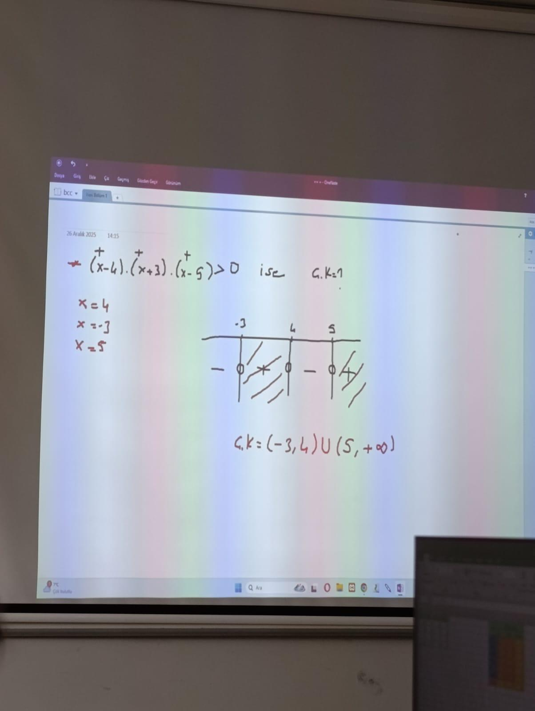
Not 1
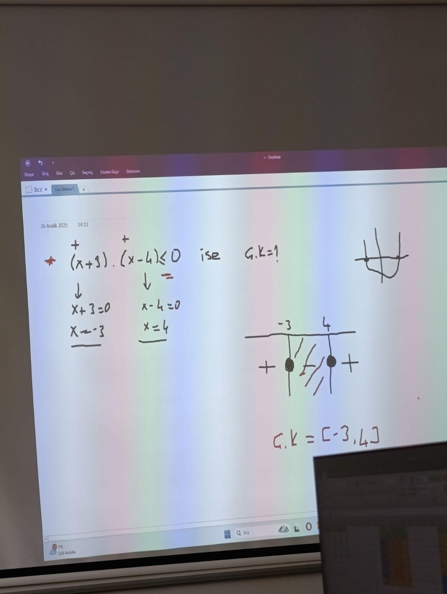
Not 2
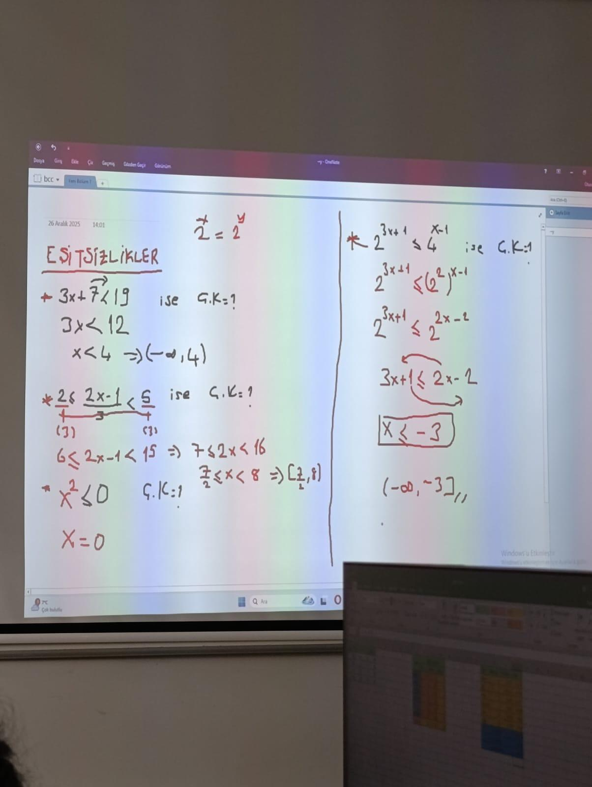
Not 3
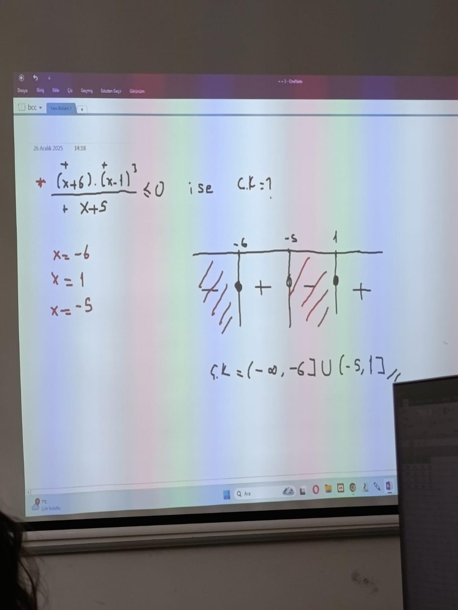
Not 4
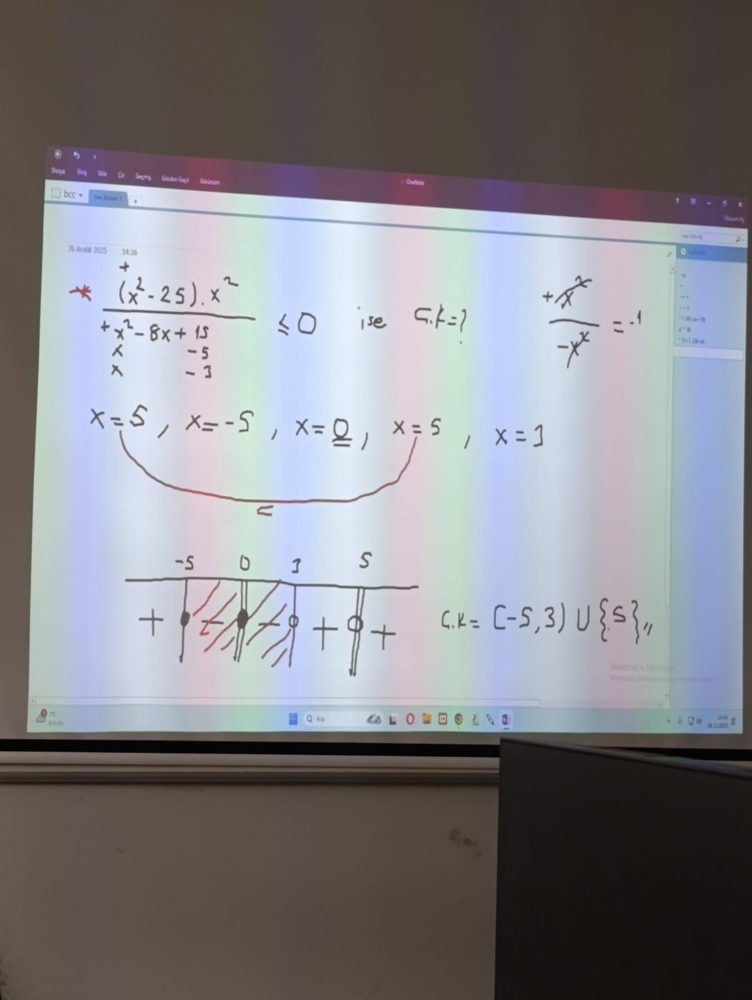
Not 5
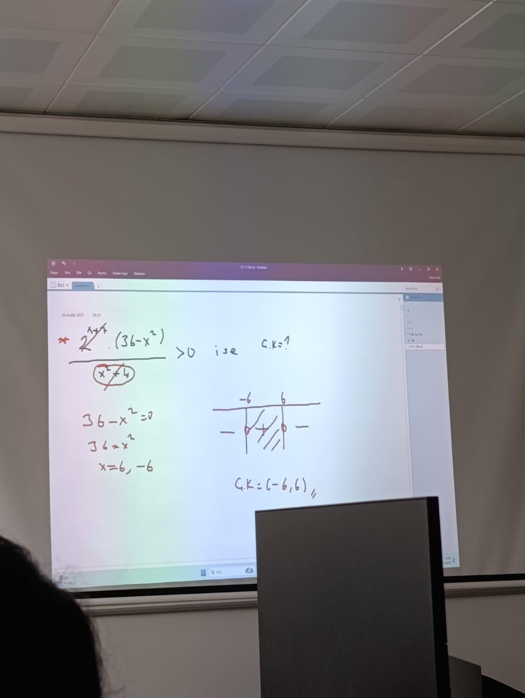
Not 6
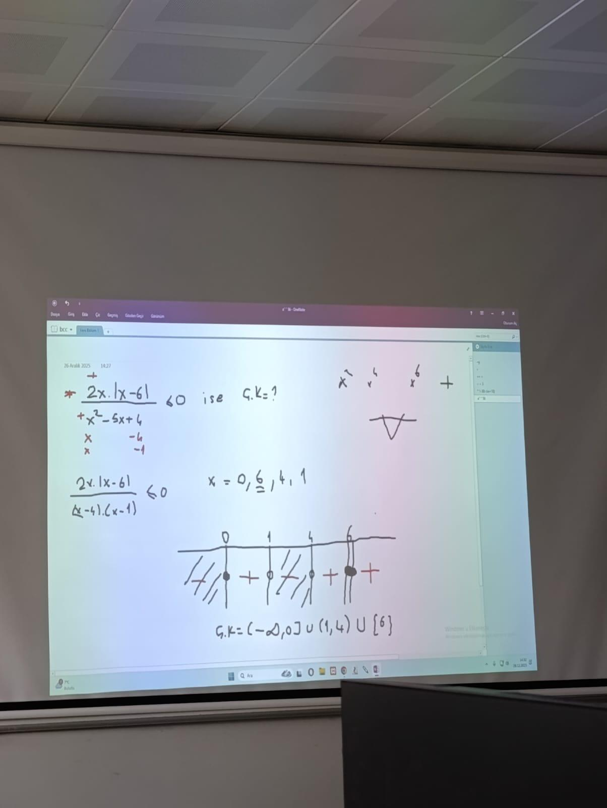
Not 7
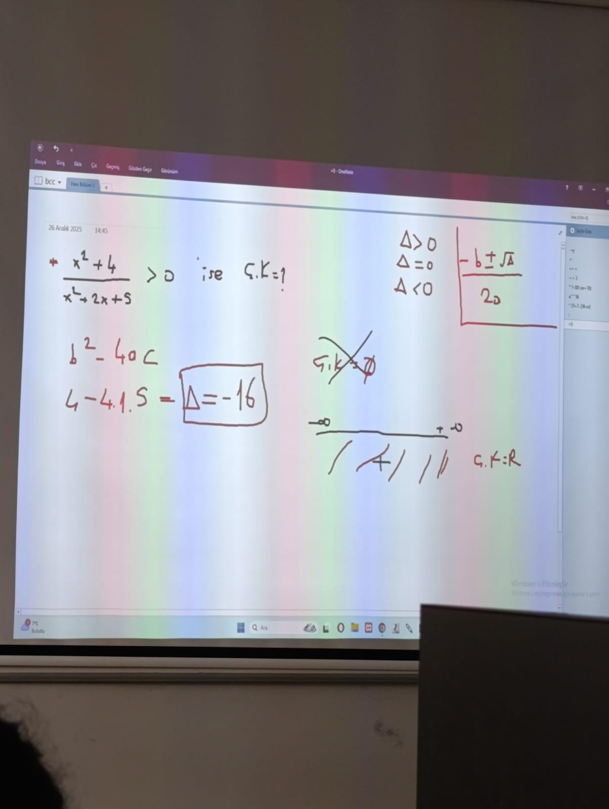
Not 8
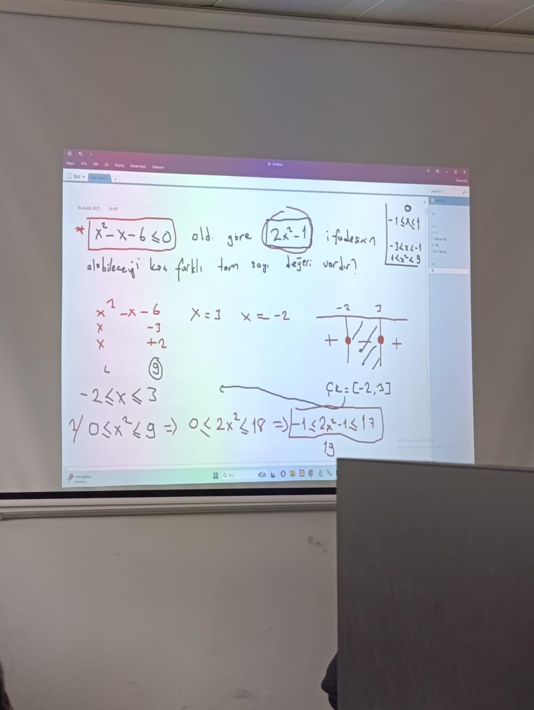
Not 9
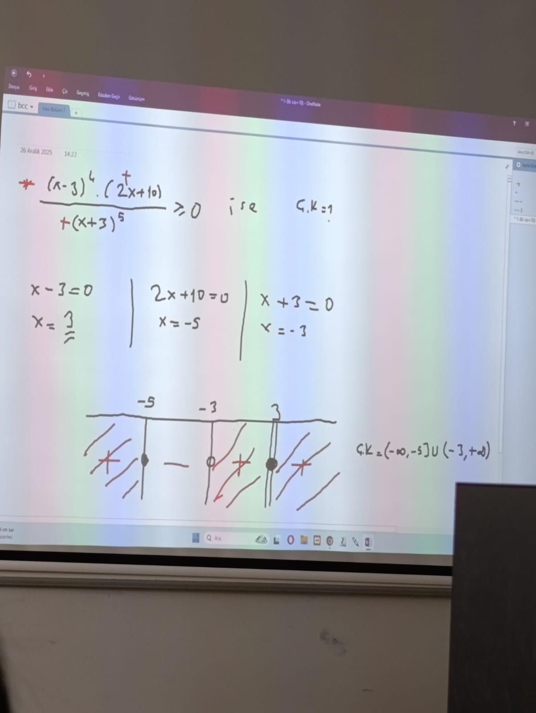
Not 10
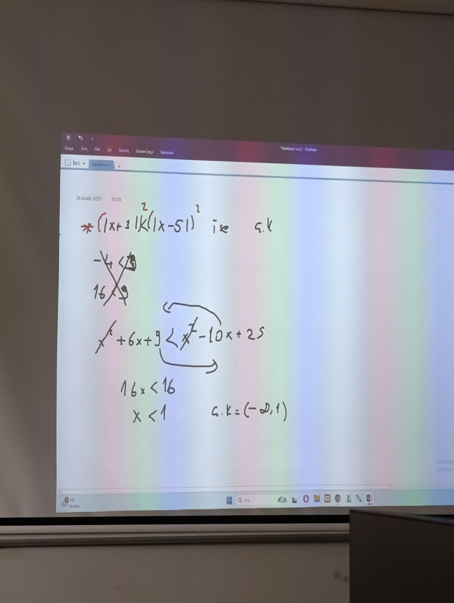
Not 11
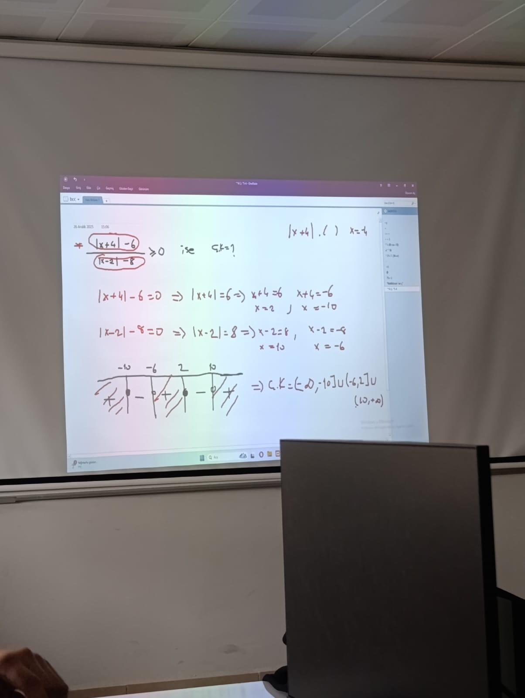
Not 12
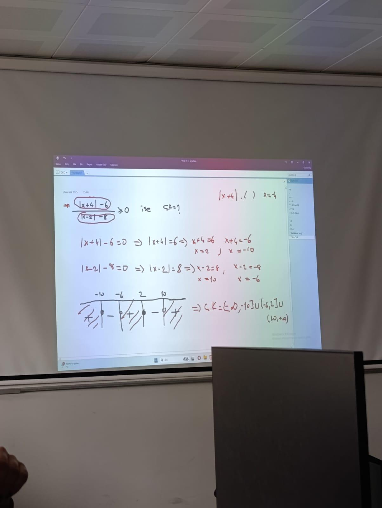
Not 13
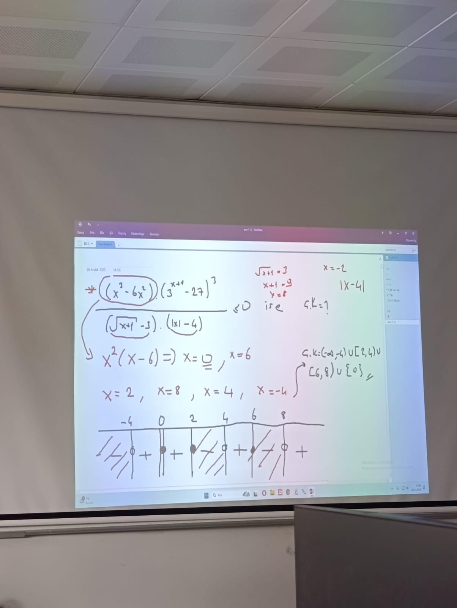
Not 14

Not 15

Not 16

Not 17

Not 18

Not 19

Not 20